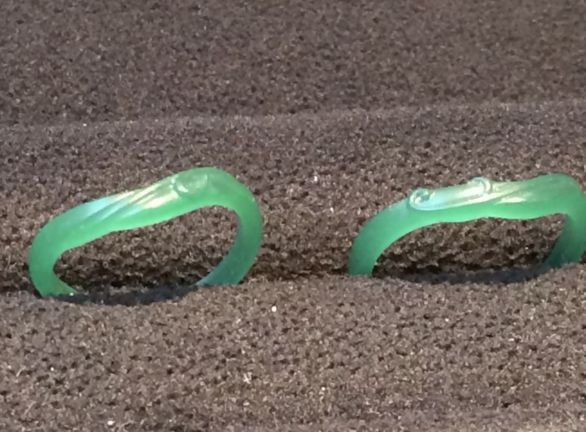

BLUESKY
Blueskyの投稿
※ リポストは表示していません
BLOG
ブログの記事
LIFE STAGE
ライフステージ

💍
結婚してから
今日で
--
日目
(--)
2014/06/27〜
DAYS WITH DOGS
愛犬たちとの日々
🐶
いぶきと暮らした日数
1,133
日間
(3年1ヶ月5日)
2021/12/09 〜 2025/01/14
🐾
いろはと暮らし始めて
今日で
--
日目
(--)
2025/03/10〜
🐕
ワン公と別れてから
--
2003/02/11〜
HEALTH ANALYTICS
体組成情報
最新測定: 読み込み中...
身長 (Height)
📏
175.0
cm
体重 (Weight)
⚖️
--.-
kg
目標: 67.4kg
体脂肪率 (Body Fat)
💧
--.-
%
目標: 19.9%
BMI
📊
--.-
目標: 22.0
📈
推移トレンド
⚖️ WEIGHT
体重 推移
最新: --.-kg · 範囲: --.-kg 〜 --.-kg⚖️
体重データ待機中
💧 BODY FAT
体脂肪率 推移
最新: --.-% · 範囲: --.-% 〜 --.-%💧
体脂肪率データ待機中
DAILY HAIKU